20 Metric Predicted Variable with Multiple Nominal Predictors
This chapter considers data structures that consist of a metric predicted variable and two (or more) nominal predictors. This chapter extends ideas introduced in the previous chapter, so please read the previous chapter if you have not already…
The traditional treatment of this sort of data structure is called multifactor analysis of variance (ANOVA). Our Bayesian approach will be a hierarchical generalization of the traditional ANOVA model. The chapter also considers generalizations of the traditional models, because it is straight forward in Bayesian software to implement heavy-tailed distributions to accommodate outliers, along with hierarchical structure to accommodate heterogeneous variances in the different groups. (pp. 583–584)
20.1 Describing groups of metric data with multiple nominal predictors
Quick reprise:
Suppose we have two nominal predictors, denoted \(\overrightarrow x_1\) and \(\overrightarrow x_2\). A datum from the \(j\)th level of \(\overrightarrow x_1\) is denoted \(x_{1[j]}\), and analogously for the second factor. The predicted value is a baseline plus a deflection due to the level of factor 1 plus a deflection due to the level of factor 2 plus a residual deflection due to the interaction of factors:
\[\begin{align*} \mu & = \beta_0 + \overrightarrow \beta_1 \cdot \overrightarrow x_1 + \overrightarrow \beta_2 \cdot \overrightarrow x_2 + \overrightarrow \beta_{1 \times 2} \cdot \overrightarrow x_{1 \times 2} \\ & = \beta_0 + \sum_j \beta_{1[j]} x_{1[j]} + \sum_k \beta_{2[k]} x_{2[k]} + \sum_{j, k} \beta_{1 \times 2[j, k]} x_{1 \times 2[j, k]} \end{align*}\]
The deflections within factors and within the interaction are constrained to sum to zero:
\[\begin{align*} \sum_j \beta_{1[j]} = 0 &&& \text{and} && \sum_k \beta_{2[k]} = 0 \;\;\; \text{and} \\ \sum_j \beta_{1 \times 2[j, k]} = 0 \text{ for all } k &&& \text{and} && \sum_k \beta_{1 \times 2[j, k]} = 0 \text{ for all } j \end{align*}\]
([these equations] are repetitions of Equations 15.9 and 15.10, p. 434). The actual data are assumed to be randomly distributed around the predicted value. (pp. 584–585)
20.1.1 Interaction.
An important concept of models with multiple predictors is interaction. Interaction means that the effect of a predictor depends on the level of another predictor. A little more technically, interaction is what is left over after the main effects of the factors are added: interaction is the nonadditive influence of the factors. (p. 585)
Here are the data necessary for our version of Figure 20.1, which displays an interaction of two 2-level factors.
library(tidyverse)
grand_mean <- 5
deflection_1 <- 1.8
deflection_2 <- 0.2
nonadditive_component <- -1
(
d <-
tibble(x1 = rep(c(-1, 1), each = 2),
x2 = rep(c(1, -1), times = 2)) %>%
mutate(mu_additive = grand_mean + (x1 * deflection_1) + (x2 * deflection_2)) %>%
mutate(mu_multiplicative = mu_additive + (x1 * x2 * nonadditive_component),
# we'll need this to accommodate `position = "dodge"` within `geom_col()`
x1_offset = x1 + x2 * -.45,
# we'll need this for the fill
x2_c = factor(x2, levels = c(1, -1)))
)## # A tibble: 4 x 6
## x1 x2 mu_additive mu_multiplicative x1_offset x2_c
## <dbl> <dbl> <dbl> <dbl> <dbl> <fct>
## 1 -1 1 3.4 4.4 -1.45 1
## 2 -1 -1 3 2 -0.55 -1
## 3 1 1 7 6 0.55 1
## 4 1 -1 6.6 7.6 1.45 -1There’s enough going on with the lines, arrows, and titles across the three panels that to my mind it seems easier to make three distinct plots and them join them at the end with syntax from the patchwork package. But enough of the settings are common among the panels that it also makes sense to keep from repeating that part of the code. So we’ll take a three-step solution. For the first step, we’ll make the baseline or foundational plot, which we’ll call p.
p <-
d %>%
ggplot(aes(x = x1, y = mu_multiplicative)) +
geom_col(aes(fill = x2_c),
position = "dodge") +
scale_fill_viridis_d(NULL, option = "C", begin = 1/3, end = 2/3,
labels = c("x2[1]", "x2[2]")) +
scale_x_continuous(breaks = c(-1, 1),
labels = c("x1[1]", "x1[2]")) +
scale_y_continuous(expression(mu), breaks = seq(from = 0, to = 10, by = 2)) +
coord_cartesian(ylim = 0:10) +
theme(axis.ticks.x = element_blank(),
legend.background = element_rect(fill = "transparent"),
legend.key = element_rect(size = 0),
legend.position = c(.17, .875),
panel.grid = element_blank())
p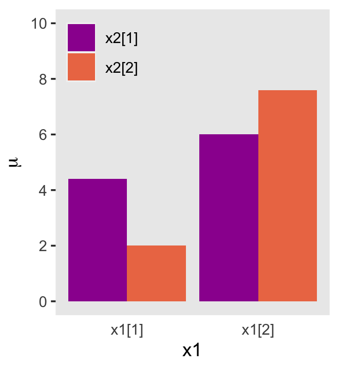
Now we have p, we’ll add panel-specific elements to it, which we’ll save as individual objects, p1, p2, and p3. That’s step 2. Then for step 3, we’ll bring them all together with patchwork.
# deflection from additive
p1 <-
p +
geom_segment(aes(x = x1_offset, xend = x1_offset,
y = mu_additive, yend = mu_multiplicative),
size = 1.25,
arrow = arrow(length = unit(.275, "cm"))) +
geom_line(aes(x = x1_offset, y = mu_additive, group = x2),
linetype = 2) +
geom_line(aes(x = x1_offset, y = mu_additive, group = x1),
linetype = 2) +
coord_cartesian(ylim = 0:10) +
ggtitle("Deflection from additive")
# effect of x1 depends on x2
p2 <-
p +
geom_segment(aes(x = x1_offset, xend = x1_offset,
y = mu_additive, yend = mu_multiplicative),
size = .5,
arrow = arrow(length = unit(.15, "cm"))) +
geom_line(aes(x = x1_offset, y = mu_additive, group = x2),
linetype = 2) +
geom_line(aes(x = x1_offset, y = mu_multiplicative, group = x2),
size = 1.25) +
ggtitle("Effect of x1 depends on x2")
# effect of x2 depends on x1
p3 <-
p +
geom_segment(aes(x = x1_offset, xend = x1_offset,
y = mu_additive, yend = mu_multiplicative),
size = .5,
arrow = arrow(length = unit(.15, "cm"))) +
geom_line(aes(x = x1_offset, y = mu_multiplicative, group = x1),
size = 1.25) +
geom_line(aes(x = x1_offset, y = mu_additive, group = x1),
linetype = 2) +
ggtitle("Effect of x2 depends on x1")
library(patchwork)
p1 + p2 + p3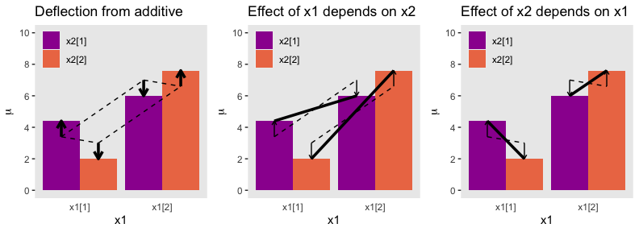
And in case it’s not clear, “the average deflection from baseline due to a predictor… is called the main effect of the predictor. The main effects of the predictors correspond to the dashed lines in the left panel of Figure 20.1” (p. 587). And further
The left panel of Figure 20.1 highlights the interaction as the nonadditive component, emphasized by the heavy vertical arrows that mark the departure from additivity. The middle panel of Figure 20.1 highlights the interaction by emphasizing that the effect of \(x_1\) depends on the level of \(x_2\). The heavy lines mark the effect of \(x_1\), that is, the changes from level 1 of \(x_1\) to level 2 of \(x_1\). Notice that the heavy lines have different slopes: The heavy line for level 1 of \(x_2\) has a shallower slope than the heavy line for level 2 of \(x_2\). The right panel of Figure 20.1 highlights the interaction by emphasizing that the effect of \(x_2\) depends on the level of \(x_1\). (p. 587)
20.1.2 Traditional ANOVA.
As was explained in Section 19.2 (p. 556), the terminology, “analysis of variance,” comes from a decomposition of overall data variance into within-group variance and between-group variance… The Bayesian approach is not ANOVA, but is analogous to ANOVA. Traditional ANOVA makes decisions about equality of groups (i.e., null hypotheses) on the basis of \(p\) values using a null hypothesis that assumes (i) the data are normally distributed within groups, and (ii) the standard deviation of the data within each group is the same for all groups. The second assumption is sometimes called “homogeneity of variance.” The entrenched precedent of ANOVA is why basic models of grouped data make those assumptions, and why the basic models presented in this chapter will also make those assumptions. Later in the chapter, those constraints will be relaxed. (pp. 587–588)
20.2 Hierarchical Bayesian approach
“Our goal is to estimate the main and interaction deflections, and other parameters, based on the observed data” (p. 588).
20.2.1 Implementation in JAGS brms.
Below is how to implement the model based on the code from Kruschke’s Jags-Ymet-Xnom2fac-MnormalHom.R and Jags-Ymet-Xnom2fac-MnormalHom-Example.R scripts. With brms, we’ll need to specify the stanvars.
mean_y <- mean(my_data$y)
sd_y <- sd(my_data$y)
omega <- sd_y / 2
sigma <- 2 * sd_y
s_r <- gamma_a_b_from_omega_sigma(mode = omega, sd = sigma)
stanvars <-
stanvar(mean_y, name = "mean_y") +
stanvar(sd_y, name = "sd_y") +
stanvar(s_r$shape, name = "alpha") +
stanvar(s_r$rate, name = "beta")And before that, of course, make sure you’ve defined the gamma_a_b_from_omega_sigma() function. E.g.,
gamma_a_b_from_omega_sigma <- function(mode, sd) {
if (mode <= 0) stop("mode must be > 0")
if (sd <= 0) stop("sd must be > 0")
rate <- (mode + sqrt(mode^2 + 4 * sd^2)) / (2 * sd^2)
shape <- 1 + mode * rate
return(list(shape = shape, rate = rate))
}With the preparatory work done, now all we’d need to do is run the brm() code.
fit <-
brm(data = my_data,
family = gaussian,
y ~ 1 + (1 | factor_1) + (1 | factor_2) + (1 | factor_1:factor_2),
prior = c(prior(normal(mean_y, sd_y * 5), class = Intercept),
prior(gamma(alpha, beta), class = sd),
prior(cauchy(0, sd_y), class = sigma)),
stanvars = stanvars)If you have reason to use different priors for the random effects, you can always specify multiple lines of class = sd, each with the appropriate coef argument.
The big new element is multiple (|) parts in the formula. In this simple model type, we’re only working random intercepts, in this case with two factors and their interaction. The formula above presumes the interaction is not itself coded within the data. But consider the case you have data including a term for the interaction of the two lower-level factors, called interaction. In that case, you’d have that last part of the formula read (1 | interaction), instead.
20.2.2 Example: It’s only money.
Load the salary data 2.
## Observations: 1,080
## Variables: 6
## $ Org <chr> "PL", "MUTH", "ENG", "CMLT", "LGED", "MGMT", "INFO", "CRIN", "CRIN", "PSY", "SOC"…
## $ OrgName <chr> "Philosophy", "Music Theory", "English", "Comparative Literature", "Language Educ…
## $ Cla <chr> "PC", "PC", "PC", "PC", "PT", "PR", "PT", "PR", "PR", "PR", "PR", "PR", "PR", "PC…
## $ Pos <chr> "FT2", "FT2", "FT2", "FT2", "FT3", "NDW", "FT3", "FT1", "NDW", "FT1", "FT1", "FT1…
## $ ClaPos <chr> "PC.FT2", "PC.FT2", "PC.FT2", "PC.FT2", "PT.FT3", "PR.NDW", "PT.FT3", "PR.FT1", "…
## $ Salary <dbl> 72395, 61017, 82370, 68805, 63796, 219600, 98814, 107745, 114275, 173302, 117240,…We’ll follow Kruschke’s example on page 593 and modify the Pos variable a bit.
my_data <-
my_data %>%
mutate(Pos = factor(Pos,
levels = c("FT3", "FT2", "FT1", "NDW", "DST") ,
ordered = T,
labels = c("Assis", "Assoc", "Full", "Endow", "Disting")))With 1080 cases, two factors, and a criterion, these data are a little too unwieldy to look at the individual case level. But if we’re tricky on how we aggregate, we can get a good sense of their structure with a geom_tile() plot. Here our strategy is to aggregate by our two factors, Pos and Org. Since our criterion is Salary, we’ll compute the mean value of the cases within each unique paring, encoded as m_salary. Also, we’ll get a sense of how many cases there are within each factor pairing with n.
my_data %>%
group_by(Pos, Org) %>%
summarise(m_salary = mean(Salary),
n = n()) %>%
ungroup() %>%
mutate(Org = fct_reorder(Org, m_salary),
Pos = fct_reorder(Pos, m_salary)) %>%
ggplot(aes(x = Org, y = Pos, fill = m_salary)) +
geom_tile() +
geom_text(aes(label = n, color = m_salary > 170000),
size = 2.75) +
# everything below this is really just aesthetic flourish
scale_fill_viridis_c("median Salary", option = "D",
breaks = c(55e3, 15e4, 26e4),
labels = c("$55K", "$150K", "$260K")) +
scale_color_manual(values = c("white", "black"), guide = 'none') +
scale_x_discrete("Org", expand = c(0, 0)) +
scale_y_discrete("Pos", expand = c(0, 0)) +
theme(axis.text.x = element_text(angle = 90, hjust = 0),
axis.text.y = element_text(hjust = 0),
axis.ticks = element_blank(),
legend.position = "top",
panel.grid = element_blank())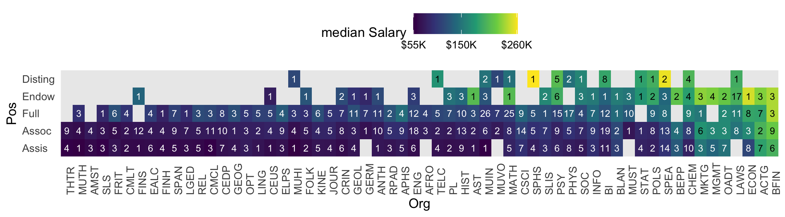
Hopefully it’s clear that each cell is a unique pairing of Org and Pos. The cells are color coded by the mean Salary. The numbers in the cells give the \(n\) cases they represent. When there’s no data for a unique combination of Org and Pos, the cells are left light gray and blank.
Load brms.
Define our stanvars.
mean_y <- mean(my_data$Salary)
sd_y <- sd(my_data$Salary)
omega <- sd_y / 2
sigma <- 2 * sd_y
s_r <- gamma_a_b_from_omega_sigma(mode = omega, sd = sigma)
stanvars <-
stanvar(mean_y, name = "mean_y") +
stanvar(sd_y, name = "sd_y") +
stanvar(s_r$shape, name = "alpha") +
stanvar(s_r$rate, name = "beta")Now fit the model.
fit20.1 <-
brm(data = my_data,
family = gaussian,
Salary ~ 1 + (1 | Pos) + (1 | Org) + (1 | Pos:Org),
prior = c(prior(normal(mean_y, sd_y * 5), class = Intercept),
prior(gamma(alpha, beta), class = sd),
prior(cauchy(0, sd_y), class = sigma)),
iter = 4000, warmup = 2000, chains = 4, cores = 4,
seed = 20,
control = list(adapt_delta = 0.999,
max_treedepth = 13),
stanvars = stanvars,
file = "fits/fit20.01")The chains look fine.
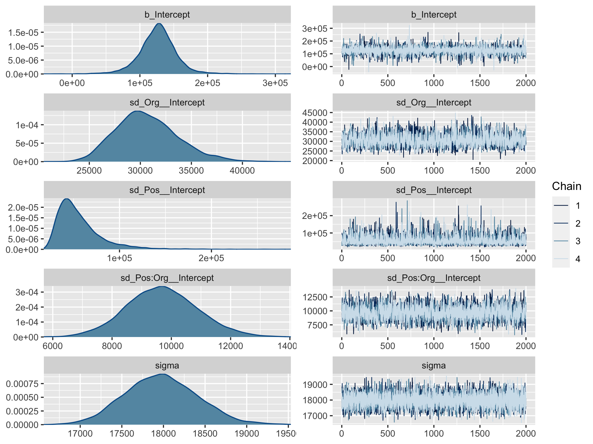
Here’s the model summary.
## Family: gaussian
## Links: mu = identity; sigma = identity
## Formula: Salary ~ 1 + (1 | Pos) + (1 | Org) + (1 | Pos:Org)
## Data: my_data (Number of observations: 1080)
## Samples: 4 chains, each with iter = 4000; warmup = 2000; thin = 1;
## total post-warmup samples = 8000
##
## Group-Level Effects:
## ~Org (Number of levels: 60)
## Estimate Est.Error l-95% CI u-95% CI Rhat Bulk_ESS Tail_ESS
## sd(Intercept) 30648.04 3042.28 25442.24 37414.75 1.00 2059 3368
##
## ~Pos (Number of levels: 5)
## Estimate Est.Error l-95% CI u-95% CI Rhat Bulk_ESS Tail_ESS
## sd(Intercept) 56119.95 24966.14 26767.66 120147.98 1.00 3423 5330
##
## ~Pos:Org (Number of levels: 216)
## Estimate Est.Error l-95% CI u-95% CI Rhat Bulk_ESS Tail_ESS
## sd(Intercept) 9697.15 1203.43 7393.97 12147.09 1.00 2523 4289
##
## Population-Level Effects:
## Estimate Est.Error l-95% CI u-95% CI Rhat Bulk_ESS Tail_ESS
## Intercept 126255.52 27552.64 69727.11 181336.74 1.00 3225 4886
##
## Family Specific Parameters:
## Estimate Est.Error l-95% CI u-95% CI Rhat Bulk_ESS Tail_ESS
## sigma 17975.97 436.80 17152.78 18853.66 1.00 7103 5660
##
## Samples were drawn using sampling(NUTS). For each parameter, Bulk_ESS
## and Tail_ESS are effective sample size measures, and Rhat is the potential
## scale reduction factor on split chains (at convergence, Rhat = 1).This was a difficult model to fit with brms. Stan does well when the criteria are on or close to a standardized metric and these Salary data are a far cry from that. Tuning adapt_delta and max_treedepth went a long way to help the model out.
Okay, let’s get ready for our version of Figure 20.3. First, we’ll use tidybayes::add_fitted_draws() to help organize the necessary posterior draws.
library(tidybayes)
# how many draws would you like?
n_draw <- 20
# wrangle
f <-
my_data %>%
distinct(Pos) %>%
expand(Pos,
Org = c("BFIN", "CHEM", "PSY", "ENG")) %>%
add_fitted_draws(fit20.1, n = n_draw, seed = 20,
allow_new_levels = T,
dpar = c("mu", "sigma")) %>%
mutate(ll = qnorm(.025, mean = mu, sd = sigma),
ul = qnorm(.975, mean = mu, sd = sigma)) %>%
mutate(Salary = map2(ll, ul, seq, length.out = 100)) %>%
unnest() %>%
mutate(density = dnorm(Salary, mu, sigma)) %>%
group_by(.draw) %>%
mutate(density = density / max(density)) %>%
mutate(Org = factor(Org, levels = c("BFIN", "CHEM", "PSY", "ENG")))
glimpse(f)## Observations: 40,000
## Variables: 13
## Groups: .draw [20]
## $ Pos <ord> Assis, Assis, Assis, Assis, Assis, Assis, Assis, Assis, Assis, Assis, Assis, A…
## $ Org <fct> BFIN, BFIN, BFIN, BFIN, BFIN, BFIN, BFIN, BFIN, BFIN, BFIN, BFIN, BFIN, BFIN, …
## $ .row <int> 1, 1, 1, 1, 1, 1, 1, 1, 1, 1, 1, 1, 1, 1, 1, 1, 1, 1, 1, 1, 1, 1, 1, 1, 1, 1, …
## $ .chain <int> NA, NA, NA, NA, NA, NA, NA, NA, NA, NA, NA, NA, NA, NA, NA, NA, NA, NA, NA, NA…
## $ .iteration <int> NA, NA, NA, NA, NA, NA, NA, NA, NA, NA, NA, NA, NA, NA, NA, NA, NA, NA, NA, NA…
## $ .draw <int> 127, 127, 127, 127, 127, 127, 127, 127, 127, 127, 127, 127, 127, 127, 127, 127…
## $ .value <dbl> 181687.1, 181687.1, 181687.1, 181687.1, 181687.1, 181687.1, 181687.1, 181687.1…
## $ mu <dbl> 181687.1, 181687.1, 181687.1, 181687.1, 181687.1, 181687.1, 181687.1, 181687.1…
## $ sigma <dbl> 18226.54, 18226.54, 18226.54, 18226.54, 18226.54, 18226.54, 18226.54, 18226.54…
## $ ll <dbl> 145963.7, 145963.7, 145963.7, 145963.7, 145963.7, 145963.7, 145963.7, 145963.7…
## $ ul <dbl> 217410.4, 217410.4, 217410.4, 217410.4, 217410.4, 217410.4, 217410.4, 217410.4…
## $ Salary <dbl> 145963.7, 146685.4, 147407.1, 148128.8, 148850.5, 149572.1, 150293.8, 151015.5…
## $ density <dbl> 0.1465288, 0.1582290, 0.1705958, 0.1836410, 0.1973740, 0.2118018, 0.2269281, 0…We’re ready to plot.
library(ggridges)
f %>%
ggplot(aes(x = Salary, y = Pos)) +
geom_vline(xintercept = fixef(fit20.1)[, 1], color = "white") +
geom_ridgeline(aes(height = density, group = interaction(Pos, .draw),
color = Pos),
fill = NA, show.legend = F,
size = 1/4, scale = 3/4) +
geom_jitter(data = my_data %>%
filter(Org %in% c("BFIN", "CHEM", "PSY", "ENG")) %>%
mutate(Org = factor(Org, levels = c("BFIN", "CHEM", "PSY", "ENG"))),
height = .025, alpha = 1/4) +
scale_color_viridis_d(option = "B", end = .9) +
scale_x_continuous(breaks = seq(from = 0, to = 300000, length.out = 4),
labels = c("$0", "$100K", "200K", "$300K")) +
coord_cartesian(xlim = 0:35e4,
ylim = c(1.25, 5.5)) +
labs(title = "Data with Posterior Predictive Distributions",
subtitle = "The white vertical line is the model-implied grand mean.",
y = "Pos") +
theme(axis.text.y = element_text(hjust = 0),
axis.ticks.y = element_blank(),
panel.grid = element_blank()) +
facet_wrap(~Org, ncol = 2)
The brms package doesn’t have a convenience function that returns output quite like what Kruschke displayed in his Table 20.2. But we can get close. The posterior_summary() will return posterior means, \(SD\)s, and percentile-based 95% intervals for all model parameters. Due to space concerns, I’ll just show the first ten lines.
## Estimate Est.Error Q2.5 Q97.5
## b_Intercept 126255.523 27552.6419 69727.105 181336.736
## sd_Org__Intercept 30648.036 3042.2779 25442.242 37414.752
## sd_Pos__Intercept 56119.953 24966.1418 26767.655 120147.980
## sd_Pos:Org__Intercept 9697.154 1203.4267 7393.966 12147.087
## sigma 17975.971 436.8002 17152.785 18853.664
## r_Org[ACTG,Intercept] 80254.691 7533.7446 65447.882 95019.103
## r_Org[AFRO,Intercept] -14880.629 9964.0507 -34291.306 4570.176
## r_Org[AMST,Intercept] -16510.435 10044.9806 -36225.773 3517.428
## r_Org[ANTH,Intercept] -18933.854 7700.2653 -34071.502 -4130.609
## r_Org[APHS,Intercept] 2678.886 7948.2368 -13079.343 18192.566I’m not aware of a simple way to extract the effective samples for all parameters within a brms fit object. There is no effsamples() function. However, we do have neff_ratio(), which returns a named vector of the ratios. For space constraints, here we look at the first ten values.
## b_Intercept sd_Org__Intercept sd_Pos__Intercept sd_Pos:Org__Intercept
## 0.4175883 0.2579337 0.4780342 0.3140237
## sigma r_Org[ACTG,Intercept] r_Org[AFRO,Intercept] r_Org[AMST,Intercept]
## 0.8754821 0.3452653 0.5259244 0.5291086
## r_Org[ANTH,Intercept] r_Org[APHS,Intercept]
## 0.3124535 0.3494390The brms::neff_ratio() function returns ratios of the effective samples over the total number of post-warmup iterations. So if we know the neff_ratio() values and the number of post-warmup iterations, the ‘Eff.Sample’ values are just a little algebra away. A quick solution is to look at the ‘total post-warmup samples’ line at the top of our print() output. Another way is to extract that information from our brm() fit object. I’m not aware of a way to do that directly, but we can extract the iter value (i.e., fit20.1$fit@sim$iter), the warmup value (i.e., fit20.1$fit@sim$warmup), and the number of chains (i.e., fit20.1$fit@sim$chains). With those values in hand, simple algebra will return the total post-warmup samples value. E.g.,
## [1] 8000And now we have n_iter, we can calculate the ‘Eff.Sample’ values.
neff_ratio(fit20.1) %>%
data.frame() %>%
rownames_to_column() %>%
set_names("parameter", "neff_ratio") %>%
mutate(eff_sample = (neff_ratio * n_iter) %>% round(digits = 0)) %>%
select(-neff_ratio) %>%
arrange(parameter) %>%
head()## parameter eff_sample
## 1 b_Intercept 3341
## 2 lp__ 1799
## 3 r_Org[ACTG,Intercept] 2762
## 4 r_Org[AFRO,Intercept] 4207
## 5 r_Org[AMST,Intercept] 4233
## 6 r_Org[ANTH,Intercept] 2500If we’re careful, we can use left_join() to bind together the posterior summaries and their effective samples like this.
post <- posterior_samples(fit20.1)
# extract the means and medians
post %>%
gather() %>%
arrange(key) %>%
group_by(key) %>%
summarise(Mean = mean(value),
Median = median(value)) %>%
# join to them the mode and HDIs
left_join(
post %>%
gather() %>%
group_by(key) %>%
mode_hdi(value) %>%
select(key:.upper) %>%
rename(Mode = value,
HDI_low = .lower,
HDI_high = .upper),
by = "key"
) %>%
# now finally join the effective samples
left_join(
neff_ratio(fit20.1) %>%
as.data.frame() %>%
rownames_to_column() %>%
set_names("key", "neff_ratio") %>%
mutate(eff_sample = (neff_ratio * n_iter)) %>%
select(-neff_ratio) %>%
arrange(key),
by = "key"
) %>%
# here we just reformat a bit
mutate_if(is.double, round, digits = 0) %>%
rename(Parameter = key) %>%
head(n = 10)## # A tibble: 10 x 7
## Parameter Mean Median Mode HDI_low HDI_high eff_sample
## <chr> <dbl> <dbl> <dbl> <dbl> <dbl> <dbl>
## 1 b_Intercept 126256 126790 127983 68383 179760 3341
## 2 lp__ -12530 -12529 -12528 -12563 -12498 1799
## 3 r_Org[ACTG,Intercept] 80255 80375 81556 65313 94857 2762
## 4 r_Org[AFRO,Intercept] -14881 -14899 -14384 -34416 4442 4207
## 5 r_Org[AMST,Intercept] -16510 -16410 -15106 -37139 2364 4233
## 6 r_Org[ANTH,Intercept] -18934 -18831 -17860 -33410 -3506 2500
## 7 r_Org[APHS,Intercept] 2679 2834 3435 -13173 18070 2796
## 8 r_Org[AST,Intercept] -15 -122 -259 -17091 18328 3591
## 9 r_Org[BEPP,Intercept] 47848 47723 46539 30509 65360 3251
## 10 r_Org[BFIN,Intercept] 106924 106987 107801 92028 121476 3071Our code returned the summaries for all model parameters, including the log posterior (i.e., lp__). Since that’s way too much output to display, here, we just looked at the first 10. If you wanted to subset the parameters, you could just filter() by the Parameter column. And if this kind of a table was really important, to you, you might even use the code above as inspiration for a custom function.
As Kruschke then pointed out, “individual salaries vary tremendously around the predicted cell mean” (p. 594), which you can quantify using \(\sigma_y\). Here it is using posterior_summary().
## Estimate Est.Error Q2.5 Q97.5
## 17975.9712 436.8002 17152.7849 18853.6636And we can get a better sense of the distribution with a plot.
post %>%
ggplot(aes(x = sigma, y = 0)) +
geom_halfeyeh(point_interval = mode_hdi, .width = c(.5, .95)) +
scale_y_continuous(NULL, breaks = NULL) +
xlab(expression(sigma[y])) +
theme(panel.grid = element_blank())
As Kruschke pointed out, this parameter is held constant across all subgroups. That is, the subgroups are homogeneous with respect to their variances. We’ll relax this constraint later on.
20.2.3 Main effect contrasts.
In applications with multiple levels of the factors, it is virtually always the case that we are interested in comparing particular levels with each other…. These sorts of comparisons, which involve levels of a single factor and collapse across the other factor(s), are called main effect comparisons or contrasts.(p. 595)
The fitted() function provides a versatile framework for contrasts among the main effects. Here’s the first contrast.
# define the new data
nd <-
tibble(Pos = c("Assis", "Assoc"),
Org = "mu")
# feed the new data into `fitted()`
f <-
fitted(fit20.1,
newdata = nd,
summary = F,
allow_new_levels = T) %>%
as_tibble() %>%
set_names("Assis", "Assoc") %>%
mutate(`Assoc vs Assis` = Assoc - Assis)
# plot
f %>%
ggplot(aes(x = `Assoc vs Assis`, y = 0)) +
stat_histintervalh(point_interval = mode_hdi, .width = c(.95, .5),
fill = "grey67", slab_color = "grey92",
breaks = 40, slab_size = .25, outline_bars = T) +
scale_y_continuous(NULL, breaks = NULL) +
labs(title = "Assoc vs Assis",
x = "Difference") +
theme(panel.grid = element_blank())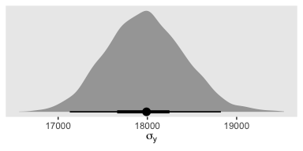
In case you were curious, here are the summary statistics.
f %>%
mode_hdi(`Assoc vs Assis`) %>%
select(`Assoc vs Assis`:.upper) %>%
mutate_if(is.double, round, digits = 0)## # A tibble: 1 x 3
## `Assoc vs Assis` .lower .upper
## <dbl> <dbl> <dbl>
## 1 13291 8397 18213Now make the next two contrasts.
nd <-
tibble(Org = c("BFIN", "CHEM", "ENG", "PSY"),
Pos = "mu")
f <-
fitted(fit20.1,
newdata = nd,
summary = F,
allow_new_levels = T) %>%
as_tibble() %>%
set_names("BFIN", "CHEM", "ENG", "PSY") %>%
transmute(`CHEM vs PSY` = CHEM - PSY,
`BFIN vs other 3` = BFIN - (CHEM + ENG + PSY) / 3)
# plot
f %>%
gather() %>%
ggplot(aes(x = value, y = 0)) +
stat_histintervalh(point_interval = mode_hdi, .width = c(.95, .5),
fill = "grey67", slab_color = "grey92",
breaks = 40, slab_size = .25, outline_bars = T,
normalize = "panels") +
scale_y_continuous(NULL, breaks = NULL) +
labs(x = "Difference") +
theme(panel.grid = element_blank()) +
facet_wrap(~key, scales = "free")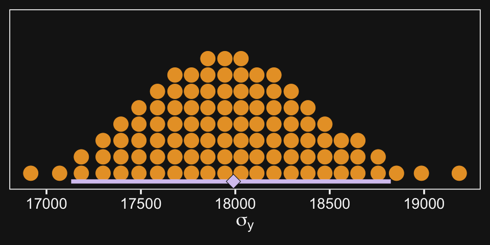
And here are their numeric summaries.
f %>%
gather(contrast, mode) %>%
group_by(contrast) %>%
mode_hdi(mode) %>%
select(contrast:.upper) %>%
mutate_if(is.double, round, digits = 0)## # A tibble: 2 x 4
## contrast mode .lower .upper
## <chr> <dbl> <dbl> <dbl>
## 1 BFIN vs other 3 103790 90498 119161
## 2 CHEM vs PSY 12410 -2189 27319For further discussion on marginal contrasts in brms, see the discussion in issue #552 in the brms GitHub repo and this discussion in the Stan user forums.
20.2.4 Interaction contrasts and simple effects.
If we’d like to make the simple effects and interaction contrasts like Kruschke displayed in Figure 20.5 within our tidyverse/brms paradigm, it’ll be simplest to just redefine our nd data and use fitted(), again.
# define our new data
nd <-
crossing(Pos = c("Assis", "Full"),
Org = c("CHEM", "PSY"))
# we need to update our col_names
brief_col_names <-
crossing(Pos = c("Assis", "Full"),
Org = c("CHEM", "PSY")) %>%
unite(key, Pos, Org) %>%
pull()
# get the draws with `fitted()`
f1 <-
fitted(fit20.1,
newdata = nd,
summary = F) %>%
# wrangle
as_tibble() %>%
set_names(brief_col_names) %>%
mutate(`Full - Assis @ PSY` = Full_PSY - Assis_PSY,
`Full - Assis @ CHEM` = Full_CHEM - Assis_CHEM) %>%
mutate(`Full.v.Assis (x) CHEM.v.PSY` = `Full - Assis @ CHEM` - `Full - Assis @ PSY`)
# what have we done?
head(f1)## # A tibble: 6 x 7
## Assis_CHEM Assis_PSY Full_CHEM Full_PSY `Full - Assis @ P… `Full - Assis @ C… `Full.v.Assis (x) C…
## <dbl> <dbl> <dbl> <dbl> <dbl> <dbl> <dbl>
## 1 85196. 87625. 156697. 113805. 26180. 71501. 45322.
## 2 90696. 84075. 156326. 118037. 33963. 65630. 31667.
## 3 89715. 80157. 156637. 118550. 38393. 66922. 28529.
## 4 84612. 90458. 164782. 115114. 24656. 80170. 55515.
## 5 94628. 82272. 161350. 112559. 30287. 66722. 36435.
## 6 84340. 86217. 147959. 118240. 32024. 63619. 31596.It’ll take just a tiny bit more wrangling before we’re ready to plot.
text <-
tibble(key = "Full - Assis @ PSY",
value = 15500,
y = .95,
label = "ROPE") %>%
mutate(key = factor(key, levels = c("Full - Assis @ PSY", "Full - Assis @ CHEM", "Full.v.Assis (x) CHEM.v.PSY")))
f1 %>%
select(-contains("_")) %>%
gather() %>%
mutate(key = factor(key, levels = c("Full - Assis @ PSY", "Full - Assis @ CHEM", "Full.v.Assis (x) CHEM.v.PSY"))) %>%
ggplot(aes(x = value, y = 0)) +
# for kicks and giggles we'll throw in the ROPE
geom_rect(xmin = -1e3, xmax = 1e3,
ymin = -Inf, ymax = Inf,
color = "transparent", fill = "white") +
stat_histintervalh(point_interval = mode_hdi, .width = c(.95, .5),
fill = "grey67", slab_color = "grey92",
breaks = 40, slab_size = .25, outline_bars = T,
normalize = "panels") +
geom_text(data = text,
aes(y = y, label = label),
color = "white", size = 5) +
scale_y_continuous(NULL, breaks = NULL) +
xlab("Difference") +
theme(panel.grid = element_blank()) +
facet_wrap(~key, scales = "free_y")
If it was really important that the labels in the x-axes were different, like they are in Kruschke’s Figure 20.5, you could always make the three plots separately and then bind them together with patchwork syntax.
Though he didn’t show the results, on page 598 Kruschke mentioned a few other contrasts we might consider. The example entailed comparing the differences within BFIN to the average of the other three. Let’s walk it out.
# define our new data
nd <-
crossing(Pos = c("Assis", "Full"),
Org = c("BFIN", "CHEM", "ENG", "PSY"))
# we need to update our `brief_col_names`
brief_col_names <-
crossing(Pos = c("Assis", "Full"),
Org = c("BFIN", "CHEM", "ENG", "PSY")) %>%
unite(key, Pos, Org) %>%
pull()
# get the draws with `fitted()`
f2 <-
fitted(fit20.1,
newdata = nd,
summary = F) %>%
# wrangle
as_tibble() %>%
set_names(brief_col_names) %>%
mutate(`Full - Assis @ BFIN` = Full_BFIN - Assis_BFIN,
`Full - Assis @ CHEM` = Full_CHEM - Assis_CHEM,
`Full - Assis @ ENG` = Full_ENG - Assis_ENG,
`Full - Assis @ PSY` = Full_PSY - Assis_PSY) %>%
mutate(`Full.v.Assis (x) BFIN.v.the rest` = `Full - Assis @ BFIN` - (`Full - Assis @ CHEM` + `Full - Assis @ ENG` + `Full - Assis @ PSY`) / 3)
# what have we done?
glimpse(f2)## Observations: 8,000
## Variables: 13
## $ Assis_BFIN <dbl> 204013.3, 194167.9, 190908.6, 204986.8, 206590.5, 1990…
## $ Assis_CHEM <dbl> 85196.23, 90695.72, 89715.38, 84612.13, 94628.19, 8433…
## $ Assis_ENG <dbl> 61319.08, 66098.68, 61094.59, 70835.14, 65593.89, 6069…
## $ Assis_PSY <dbl> 87625.17, 84074.65, 80157.10, 90458.46, 82272.07, 8621…
## $ Full_BFIN <dbl> 234638.3, 243410.2, 239923.8, 227318.5, 248931.7, 2354…
## $ Full_CHEM <dbl> 156697.5, 156325.8, 156637.2, 164782.3, 161350.2, 1479…
## $ Full_ENG <dbl> 110973.1, 106921.4, 107845.9, 105359.4, 104676.9, 1198…
## $ Full_PSY <dbl> 113804.9, 118037.4, 118549.9, 115114.0, 112559.1, 1182…
## $ `Full - Assis @ BFIN` <dbl> 30625.00, 49242.23, 49015.15, 22331.71, 42341.18, 3635…
## $ `Full - Assis @ CHEM` <dbl> 71501.25, 65630.09, 66921.85, 80170.22, 66722.06, 6361…
## $ `Full - Assis @ ENG` <dbl> 49654.02, 40822.74, 46751.28, 34524.27, 39083.05, 5912…
## $ `Full - Assis @ PSY` <dbl> 26179.68, 33962.77, 38392.82, 24655.50, 30287.04, 3202…
## $ `Full.v.Assis (x) BFIN.v.the rest` <dbl> -18486.6456, 2437.0316, -1673.4980, -24118.2823, -3022…Now plot.
f2 %>%
select(-contains("_")) %>%
gather() %>%
ggplot(aes(x = value, y = 0)) +
geom_rect(xmin = -1e3, xmax = 1e3,
ymin = -Inf, ymax = Inf,
color = "transparent", fill = "white") +
stat_histintervalh(point_interval = mode_hdi, .width = c(.95, .5),
fill = "grey67", slab_color = "grey92",
breaks = 30, slab_size = .25, outline_bars = T,
normalize = "panels") +
scale_y_continuous(NULL, breaks = NULL) +
xlab("Difference") +
theme(panel.grid = element_blank()) +
facet_wrap(~key, scales = "free_y", ncol = 3)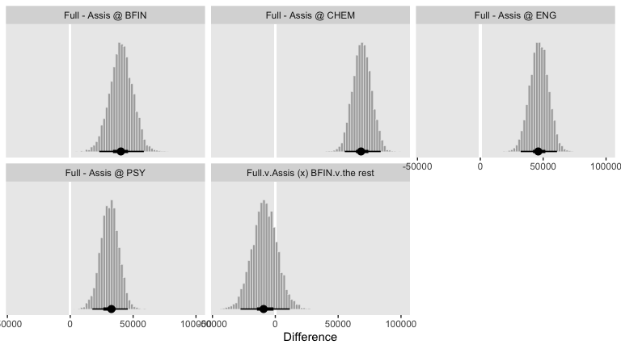
So while the overall pay averages for those in BFIN were larger than those in the other three departments, the differences between full and associate professors within BFIN wasn’t substantially different from the differences within the other three departments. To be sure, the interquartile range of that last difference distribution fell below both zero and the ROPE, but there’s still a lot of spread in the rest of the distribution.
20.2.4.1 Interaction effects: High uncertainty and shrinkage.
“It is important to realize that the estimates of interaction contrasts are typically much more uncertain than the estimates of simple effects or main effects” (p. 598).
If we start with our fitted() object f1, we can wrangle a bit, compute the HDIs with tidybayes::mode_hdi() and then use simple subtraction to compute the interval range for each difference.
f1 %>%
select(-contains("_")) %>%
gather() %>%
mutate(key = factor(key, levels = c("Full - Assis @ PSY", "Full - Assis @ CHEM", "Full.v.Assis (x) CHEM.v.PSY"))) %>%
group_by(key) %>%
mode_hdi(value) %>%
select(key:.upper) %>%
mutate(`interval range` = .upper - .lower)## # A tibble: 3 x 5
## key value .lower .upper `interval range`
## <fct> <dbl> <dbl> <dbl> <dbl>
## 1 Full - Assis @ PSY 32732. 17575. 45755. 28181.
## 2 Full - Assis @ CHEM 68192. 55265. 83841. 28577.
## 3 Full.v.Assis (x) CHEM.v.PSY 37203. 17582. 57824. 40242.Just like Kruschke pointed out in the text, the interval for the interaction estimate was quite larger than the intervals for the simple contrasts.
This large uncertainty of an interaction contrast is caused by the fact that it involves at least four sources of uncertainty (i.e., at least four groups of data), unlike its component simple effects which each involve only half of those sources of uncertainty. In general, interaction contrasts require a lot of data to estimate accurately. (p. 598)
Gelman has blogged on this, a bit (e.g., You need 16 times the sample size to estimate an interaction than to estimate a main effect).
There is also shrinkage.
The interaction contrasts also can experience notable shrinkage from the hierarchical model. In the present application, for example, there are 300 interaction deflections (5 levels of seniority times 60 departments) that are assumed to come from a higher- level distribution that has an estimated standard deviation, denoted \(\sigma_{\beta 1 \times 2}\) in Figure 20.2. Chances are that most of the 300 interaction deflections will be small, and therefore the estimated standard deviation of the interaction deflections will be small, and therefore the estimated deflections themselves will be shrunken toward zero. This shrinkage is inherently neither good nor bad; it is simply the correct consequence of the model assumptions. The shrinkage can be good insofar as it mitigates false alarms about interactions, but the shrinkage can be bad if it inappropriately obscures meaningful interactions. (p. 598)
Here’s that \(\sigma_{\beta 1 \times 2}\).
post %>%
ggplot(aes(x = `sd_Pos:Org__Intercept`, y = 0)) +
stat_histintervalh(point_interval = mode_hdi, .width = c(.95, .5),
fill = "grey67", slab_color = "grey92",
breaks = 30, slab_size = .25, outline_bars = T) +
scale_y_continuous(NULL, breaks = NULL) +
theme(panel.grid = element_blank())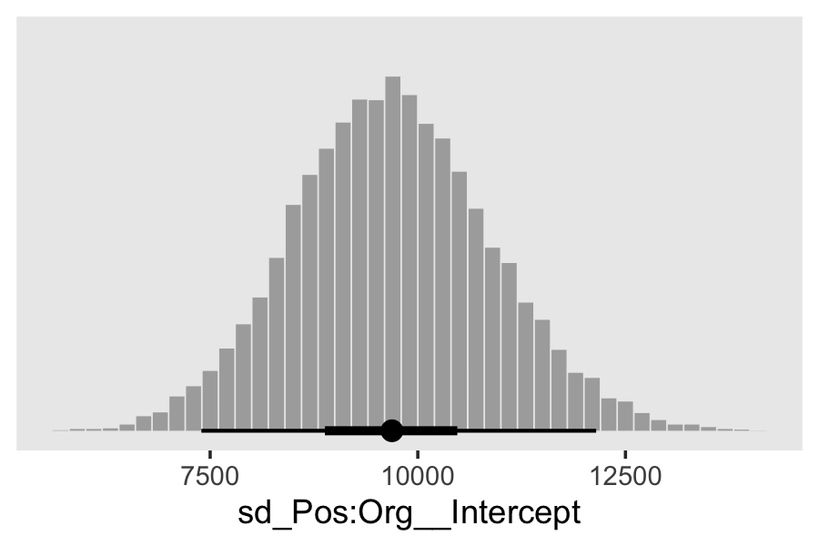
20.3 Rescaling can change interactions, homogeneity, and normality
When interpreting interactions, it can be important to consider the scale on which the data are measured. This is because an interaction means non-additive effects when measured on the current scale. If the data are nonlinearly transformed to a different scale, then the non-additivity can also change. (p. 599)
Here is Kruschke’s initial example of a possible interaction effect of sex and political party with respect to wages.
d <-
tibble(monetary_units = c(10, 12, 15, 18),
politics = rep(c("democrat", "republican"), each = 2),
sex = rep(c("women", "men"), times = 2)) %>%
mutate(sex_number = if_else(sex == "women", 1, 2),
politics = factor(politics, levels = c("republican", "democrat")))
d %>%
ggplot(aes(x = sex_number, y = monetary_units, color = politics)) +
geom_line(size = 2) +
scale_color_manual(NULL, values = c("red2", "blue2")) +
scale_x_continuous("sex", breaks = 1:2, labels = c("women", "men")) +
coord_cartesian(ylim = 0:20) +
theme(legend.background = element_rect(fill = "transparent"),
legend.key = element_rect(fill = "transparent", color = "transparent"),
legend.position = c(.2, .15),
panel.grid = element_blank())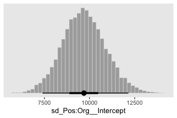
Because the pay discrepancy between men and women is not equal between Democrats and Republicans, in this example, it can be tempting to claim there is a subtle interaction. Not necessarily so.
tibble(politics = c("democrat", "republican"),
female_salary = c(10, 15)) %>%
mutate(male_salary = 1.2 * female_salary)## # A tibble: 2 x 3
## politics female_salary male_salary
## <chr> <dbl> <dbl>
## 1 democrat 10 12
## 2 republican 15 18If we take female salary as the baseline and then add 20% to it for the men, the salary difference between Republican men and women will be larger than that between Democratic men and women. Even though the rate increase from women to men was the same, the increase in absolute value was greater within Republicans because Republican women made more than Democratic women.
Look what happens to our original plot when we transform monetary_units with log10().
d %>%
ggplot(aes(x = sex_number, y = log10(monetary_units), color = politics)) +
geom_line(size = 2) +
scale_color_manual(NULL, values = c("red2", "blue2")) +
scale_x_continuous("sex", breaks = 1:2, labels = c("women", "men")) +
theme(legend.background = element_rect(fill = "transparent"),
legend.key = element_rect(fill = "transparent", color = "transparent"),
legend.position = c(.2, .4),
panel.grid = element_blank())
“Equal ratios are transformed to equal distances by a logarithmic transformation” (p. 599).
20.4 Heterogeneous variances and robustness against outliers
Before we fit the robust hierarchical variances model, we need to define our stanvars.
stanvars <-
stanvar(mean_y, name = "mean_y") +
stanvar(sd_y, name = "sd_y") +
stanvar(s_r$shape, name = "alpha") +
stanvar(s_r$rate, name = "beta") +
stanvar(1/29, name = "one_over_twentynine")Recall that to fit a robust hierarchical variances model, we need to wrap our two formulas within the bf() function. Warning: this one took several hours fit.
fit20.2 <-
brm(data = my_data,
family = student,
bf(Salary ~ 1 + (1 | Pos) + (1 | Org) + (1 | Pos:Org),
sigma ~ 1 + (1 | Pos:Org)),
prior = c(prior(normal(mean_y, sd_y * 5), class = Intercept),
prior(normal(log(sd_y), 1), class = Intercept, dpar = sigma),
prior(gamma(alpha, beta), class = sd),
prior(normal(0, 1), class = sd, dpar = sigma),
prior(exponential(one_over_twentynine), class = nu)),
iter = 4000, warmup = 1000, chains = 4, cores = 4,
seed = 20,
control = list(adapt_delta = 0.9995,
max_treedepth = 15),
stanvars = stanvars,
file = "fits/fit20.02")Behold the summary.
## Family: student
## Links: mu = identity; sigma = log; nu = identity
## Formula: Salary ~ 1 + (1 | Pos) + (1 | Org) + (1 | Pos:Org)
## sigma ~ 1 + (1 | Pos:Org)
## Data: my_data (Number of observations: 1080)
## Samples: 4 chains, each with iter = 4000; warmup = 1000; thin = 1;
## total post-warmup samples = 12000
##
## Group-Level Effects:
## ~Org (Number of levels: 60)
## Estimate Est.Error l-95% CI u-95% CI Rhat Bulk_ESS Tail_ESS
## sd(Intercept) 31447.99 3029.60 26167.92 38068.59 1.00 2752 5125
##
## ~Pos (Number of levels: 5)
## Estimate Est.Error l-95% CI u-95% CI Rhat Bulk_ESS Tail_ESS
## sd(Intercept) 50657.30 23555.77 23446.66 110351.14 1.00 4707 6450
##
## ~Pos:Org (Number of levels: 216)
## Estimate Est.Error l-95% CI u-95% CI Rhat Bulk_ESS Tail_ESS
## sd(Intercept) 5303.89 862.72 3741.71 7154.75 1.00 2618 4524
## sd(sigma_Intercept) 0.97 0.07 0.84 1.12 1.00 3422 5842
##
## Population-Level Effects:
## Estimate Est.Error l-95% CI u-95% CI Rhat Bulk_ESS Tail_ESS
## Intercept 122225.83 24590.96 72456.12 172261.44 1.00 3407 5453
## sigma_Intercept 9.11 0.09 8.93 9.29 1.00 3125 5806
##
## Family Specific Parameters:
## Estimate Est.Error l-95% CI u-95% CI Rhat Bulk_ESS Tail_ESS
## nu 6.96 4.60 3.71 15.51 1.00 5352 6040
##
## Samples were drawn using sampling(NUTS). For each parameter, Bulk_ESS
## and Tail_ESS are effective sample size measures, and Rhat is the potential
## scale reduction factor on split chains (at convergence, Rhat = 1).This time we’ll just feed the results of the wrangling code right into the plotting code for our version of the top panels of Figure 20.8.
# how many draws would you like?
n_draw <- 20
# wrangle
my_data %>%
distinct(Pos) %>%
expand(Pos,
Org = c("BFIN", "CHEM", "PSY", "ENG")) %>%
add_fitted_draws(fit20.2, n = n_draw, seed = 20,
allow_new_levels = T,
dpar = c("mu", "sigma", "nu")) %>%
mutate(ll = qt(.025, df = nu),
ul = qt(.975, df = nu)) %>%
mutate(Salary = map2(ll, ul, seq, length.out = 100)) %>%
unnest() %>%
mutate(density = dt(Salary, nu)) %>%
# notice the conversion
mutate(Salary = mu + Salary * sigma) %>%
group_by(.draw) %>%
mutate(density = density / max(density)) %>%
mutate(Org = factor(Org, levels = c("BFIN", "CHEM", "PSY", "ENG"))) %>%
# plot
ggplot(aes(x = Salary, y = Pos)) +
geom_vline(xintercept = fixef(fit20.2)[1, 1], color = "white") +
geom_ridgeline(aes(height = density, group = interaction(Pos, .draw),
color = Pos),
fill = NA, show.legend = F,
size = 1/4, scale = 3/4) +
geom_jitter(data = my_data %>%
filter(Org %in% c("BFIN", "CHEM", "PSY", "ENG")) %>%
mutate(Org = factor(Org, levels = c("BFIN", "CHEM", "PSY", "ENG"))),
height = .025, alpha = 1/4) +
scale_color_viridis_d(option = "B", end = .9) +
scale_x_continuous(breaks = seq(from = 0, to = 300000, length.out = 4),
labels = c("$0", "$100K", "200K", "$300K")) +
coord_cartesian(xlim = 0:35e4,
ylim = c(1.25, 5.5)) +
labs(title = "Data with Posterior Predictive Distributions",
subtitle = "The white vertical line is the model-implied grand mean.",
y = "Pos") +
theme(axis.text.y = element_text(hjust = 0),
axis.ticks.y = element_blank(),
panel.grid = element_blank()) +
facet_wrap(~Org, ncol = 2)
Our results for the bottom panel of Figure 20.8 will differ substantially from Kruschke’s. Recall that Kurschke modeled \(\sigma_{[j, k](i)}\) with a hierarchical gamma distribution and using the \(\omega + \sigma\) parameterization. We, however, modeled our hierarchical \(\log (\sigma)\) with the typical normal distribution. As such, we have posteriors for \(\sigma_\mu\) and \(\sigma_\sigma\).
# wrangle
posterior_samples(fit20.2) %>%
transmute(Normality = log10(nu),
`Mean of Cell Sigma's` = exp(b_sigma_Intercept),
`SD of Cell Sigma's` = exp(`sd_Pos:Org__sigma_Intercept`)) %>%
gather() %>%
mutate(key = factor(key, levels = c("Normality", "Mean of Cell Sigma's", "SD of Cell Sigma's"))) %>%
# plot
ggplot(aes(x = value, y = 0)) +
stat_histintervalh(point_interval = mode_hdi, .width = c(.95, .5),
fill = "grey67", slab_color = "grey92",
breaks = 30, slab_size = .25, outline_bars = T,
normalize = "panels") +
scale_y_continuous(NULL, breaks = NULL) +
xlab("param. value") +
theme(panel.grid = element_blank()) +
facet_wrap(~key, scales = "free", ncol = 3)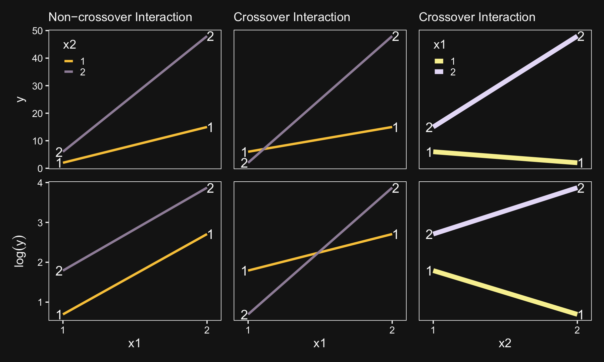
Though our \(\sigma_\mu\) is on a similar metric to Kruschke’s \(\sigma_\omega\), our \(\sigma_\sigma\) is just fundamentally different from his. So it goes. If you think I’m in error, here, share your insights. Even though our hierarchical \(\sigma\) parameters look different from Kruschke’s, it turns the contrast distributions are quite similar. Here’s the necessary wrangling to make our version for Figure 20.9.
# define our new data
nd <-
crossing(Pos = c("Assis", "Full"),
Org = c("CHEM", "PSY"))
# we need to update our col_names
brief_col_names <-
crossing(Pos = c("Assis", "Full"),
Org = c("CHEM", "PSY")) %>%
unite(key, Pos, Org) %>%
pull()
# get the draws with `fitted()`
f <-
fitted(fit20.2,
newdata = nd,
summary = F) %>%
# wrangle
as_tibble() %>%
set_names(brief_col_names) %>%
transmute(`Full - Assis @ CHEM` = Full_CHEM - Assis_CHEM,
`Full - Assis @ PSY` = Full_PSY - Assis_PSY) %>%
mutate(`Full.v.Assis (x) CHEM.v.PSY` = `Full - Assis @ CHEM` - `Full - Assis @ PSY`) %>%
gather() %>%
mutate(key = factor(key, levels = c("Full - Assis @ PSY", "Full - Assis @ CHEM", "Full.v.Assis (x) CHEM.v.PSY")))
# what have we done?
head(f)## # A tibble: 6 x 2
## key value
## <fct> <dbl>
## 1 Full - Assis @ CHEM 48941.
## 2 Full - Assis @ CHEM 48521.
## 3 Full - Assis @ CHEM 50871.
## 4 Full - Assis @ CHEM 49690.
## 5 Full - Assis @ CHEM 50048.
## 6 Full - Assis @ CHEM 42843.Now plot.
f %>%
ggplot(aes(x = value, y = 0)) +
geom_rect(xmin = -1e3, xmax = 1e3,
ymin = -Inf, ymax = Inf,
color = "transparent", fill = "white") +
stat_histintervalh(point_interval = mode_hdi, .width = c(.95, .5),
fill = "grey67", slab_color = "grey92",
breaks = 30, slab_size = .25, outline_bars = T,
normalize = "panels") +
scale_y_continuous(NULL, breaks = NULL) +
xlab("Difference") +
theme(panel.grid = element_blank()) +
facet_wrap(~key, scales = "free", ncol = 3)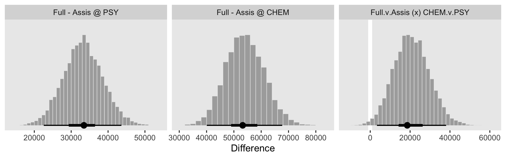
See? Our contrast distributions are really close those in the text. Here are the numeric estimates.
f %>%
group_by(key) %>%
mode_hdi(value) %>%
select(key:.upper) %>%
mutate_if(is.double, round, digits = 0)## # A tibble: 3 x 4
## key value .lower .upper
## <fct> <dbl> <dbl> <dbl>
## 1 Full - Assis @ PSY 33451 22559 43609
## 2 Full - Assis @ CHEM 53226 40070 67693
## 3 Full.v.Assis (x) CHEM.v.PSY 18579 3367 38073In the second half of the middle paragraph on page 605, Kruschke contrasted the \(\sigma_{\beta 1 \times 2}\) parameter in the two models (i.e., our fit20.1 and fit20.2). Recall that in the brms output, these are termed sd_Pos:Org__Intercept. Here are the comparisons from our brms models.
## Estimate Est.Error Q2.5 Q97.5
## 9697.154 1203.427 7393.966 12147.087## Estimate Est.Error Q2.5 Q97.5
## 5303.8945 862.7234 3741.7096 7154.7545They are similar to the values in the text. And recall, of course, the brms::posterior_summary() function returns posterior means. If you really wanted the posterior modes, like Kruschke reported in the text, you’ll have to work a little harder.
bind_rows(posterior_samples(fit20.1) %>% select(`sd_Pos:Org__Intercept`),
posterior_samples(fit20.2) %>% select(`sd_Pos:Org__Intercept`)) %>%
mutate(fit = rep(c("fit20.1", "fit20.2"), each = n() / 2)) %>%
group_by(fit) %>%
mode_hdi(`sd_Pos:Org__Intercept`) %>%
select(fit:.upper) %>%
mutate_if(is.double, round, digits = 0)## # A tibble: 3 x 4
## fit `sd_Pos:Org__Intercept` .lower .upper
## <chr> <dbl> <dbl> <dbl>
## 1 fit20.1 9664 4137 6622
## 2 fit20.1 9664 6927 12114
## 3 fit20.2 5100 3599 7003The curious might even look at those in a plot.
bind_rows(posterior_samples(fit20.1) %>% select(`sd_Pos:Org__Intercept`),
posterior_samples(fit20.2) %>% select(`sd_Pos:Org__Intercept`)) %>%
mutate(fit = rep(c("fit20.1", "fit20.2"), each = n() / 2)) %>%
ggplot(aes(x = `sd_Pos:Org__Intercept`, y = fit)) +
geom_halfeyeh(point_interval = mode_hdi, .width = c(.5, .95)) +
labs(x = expression(sigma[beta][1%*%2]),
y = NULL) +
theme(panel.grid = element_blank())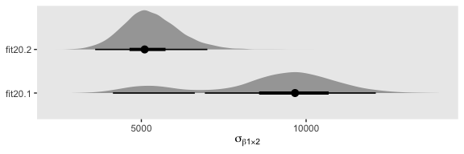
“Which model is a better description of the data?… In principle, an intrepid programmer could do a Bayesian model comparison…” (pp. 605–606). We could also examine iformation criteria, like the LOO.
## Warning: Found 6 observations with a pareto_k > 0.7 in model 'fit20.1'. It is recommended to set
## 'reloo = TRUE' in order to calculate the ELPD without the assumption that these observations are
## negligible. This will refit the model 6 times to compute the ELPDs for the problematic observations
## directly.## Automatically saving the model object in 'fits/fit20.01.rds'## Warning: Found 60 observations with a pareto_k > 0.7 in model 'fit20.2'. With this many problematic
## observations, it may be more appropriate to use 'kfold' with argument 'K = 10' to perform 10-fold
## cross-validation rather than LOO.## Automatically saving the model object in 'fits/fit20.02.rds'Sigh. Both models had high pareto_k values, suggesting there were outliers relative to what was expected by their likelihoods. Just a little further in the text, Kruschke gives us hints why this might be so:
Moreover, both models assume that the data within cells are distributed symmetrically above and below their central tendency, either as a normal distribution or a \(t\)-distribution. The data instead seem to be skewed toward larger values, especially for advanced seniorities. (p. 606)
Here’s the current LOO difference.
## elpd_diff se_diff elpd_loo se_elpd_loo p_loo se_p_loo looic se_looic
## fit20.2 0.0 0.0 -11766.9 41.5 314.8 10.9 23533.7 83.1
## fit20.1 -426.8 34.1 -12193.7 42.8 139.5 11.7 24387.3 85.6For a more robust model comparison, we might follow the kfold() suggestion in the warning. However, be warned: The kfold() function entails refitting the model K times. fit20.1 took about an hour to fit and fit20.2 took several more. Proceed with caution.
But really, “we might want to create a model that describes the data within each cell as a skewed distribution such as a Weibull” (p. 606). Yes, brms can handle Weibull regression (e.g., here).
20.5 Within-subject designs
When every subject contributes many measurements to every cell, then the model of the situation is a straight-forward extension of the models we have already considered. We merely add “subject” as another nominal predictor in the model, with each individual subject being a level of the predictor. If there is one predictor other than subject, the model becomes
\[ y = \beta_0 + \overrightarrow \beta_1 \overrightarrow x_1 + \overrightarrow \beta_S \overrightarrow x_S + \overrightarrow \beta_{1 \times S} \overrightarrow x_{1 \times S} \]
This is exactly the two-predictor model we have already considered, with the second predictor being subject. When there are two predictors other than subject, the model becomes
\[\begin{align*} y = & \; \beta_0 & \text{baseline} \\ & + \overrightarrow \beta_1 \overrightarrow x_1 + \overrightarrow \beta_2 \overrightarrow x_2 + \overrightarrow \beta_S \overrightarrow x_S & \text{main effects} \\ & + \overrightarrow \beta_{1 \times 2} \overrightarrow x_{1 \times 2} + \overrightarrow \beta_{1 \times S} \overrightarrow x_{1 \times S} + \overrightarrow \beta_{2 \times S} \overrightarrow x_{2 \times S} & \text{two-way interactions} \\ & + \overrightarrow \beta_{1 \times 2 \times S} \overrightarrow x_{1 \times 2 \times S} & \text{three-way interactions} \end{align*}\]
This model includes all the two-way interactions of the factors, plus the three-way interaction. (p. 607)
In situations in which subjects only contribute one observation per condition/cell, we simplify the model to
\[\begin{align*} y = & \; \beta_0 \\ & + \overrightarrow \beta_1 \overrightarrow x_1 + \overrightarrow \beta_2 \overrightarrow x_2 + \overrightarrow \beta_{1 \times 2} \overrightarrow x_{1 \times 2} \\ & + \overrightarrow \beta_S \overrightarrow x_S \end{align*}\]
“In other words, we assume a main effect of subject, but no interaction of subject with other predictors. In this model, the subject effect (deflection) is constant across treatments, and the treatment effects (deflections) are constant across subjects” (p. 608).
20.5.1 Why use a within-subject design? And why not?
Kruschke opined “the primary reason to use a within-subject design is that you can achieve greater precision in the estimates of the effects than in a between-subject design” (p. 608). Well, to that I counterpoint: “No one goes to the circus to see the average dog jump through the hoop significantly oftener than untrained does raised under the same circumstances” (Skinner, 1956, p. 228). And it’s unlikely you’ll make a skillful jumper of your dog without repeated trials. There’s also the related issue that between- and within-person processes aren’t necessarily the same. For an introduction to the issue, see Hamaker’s (2012) chapter, Why researchers should think “within-person”: A paradigmatic rationale or Bolger, Zee, Rossignac-Milon, and Hassin’s (2019) paper, Causal Processes in Psychology Are Heterogeneous.
But we digress.
Here’s the 4-subject response time data.
(
d <-
tibble(response_time = c(300, 320, 350, 370, 400, 420, 450, 470),
subject = rep(1:4, each = 2),
hand = rep(c("dominant", "nondominant"), times = 4))
)## # A tibble: 8 x 3
## response_time subject hand
## <dbl> <int> <chr>
## 1 300 1 dominant
## 2 320 1 nondominant
## 3 350 2 dominant
## 4 370 2 nondominant
## 5 400 3 dominant
## 6 420 3 nondominant
## 7 450 4 dominant
## 8 470 4 nondominant“For every subject, the difference between dominant and nondominant hands is exactly 20 ms, but there are big differences across subjects in overall response times” (p. 608). Here’s what that looks like.
d %>%
mutate(subject = factor(subject)) %>%
ggplot(aes(x = response_time, y = subject)) +
geom_line(aes(group = subject), linetype = 3) +
geom_point(aes(color = hand), size = 2) +
scale_color_viridis_d(option = "A", begin = 1/3, end = 2/3) +
theme(panel.grid = element_blank())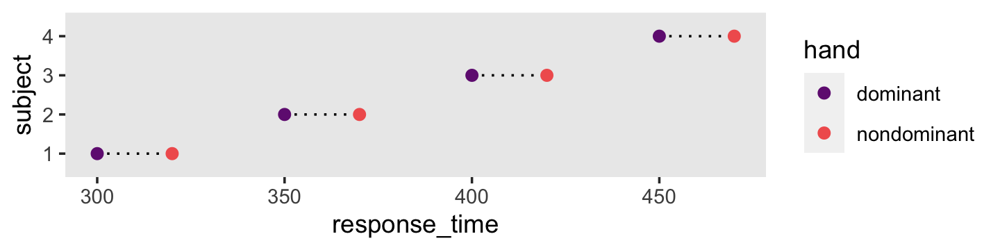
Here there is more variability between subjects than within them, which you’d never detect without a within-subject design including multiple subjects.
20.5.2 Split-plot design.
“Split-plot experiments were invented by Fisher (1925)” (p. 610).
Kruschke then wrote this to set the stage for the next subsection:
Consider an agricultural experiment investigating the productivity of different soil tilling methods and different fertilizers. It is relatively easy to provide all the farmers with the several different fertilizers. But it might be relatively difficult to provide all farmers with all the machinery for several different tilling methods. Therefore, any particular farmer will use a single (randomly assigned) tilling method on his whole plot, and tilling methods will differ between whole plots. Each farmer will split his field into subplots and apply all the fertilizers to different (randomly assigned) split plots, and fertilizers will differ across split plots within whole plots. This type of experiment inspires the name, split-plot design. The generic experiment-design term for the farmer’s field is “block.” Then, the factor that varies within every field is called the within-block factor and the factor that varies between fields is called the between-block factor. Notice also that each split plot yields a single measurement (in this case the productivity measured in bushels per acre), not multiple measurements. (p. 610)
20.5.2.1 Example: Knee high by the fourth of July.
Load the agronomy data.
## Observations: 99
## Variables: 4
## $ Field <dbl> 1, 1, 1, 2, 2, 2, 3, 3, 3, 4, 4, 4, 5, 5, 5, 6, 6, 6, 7, 7, 7, 8, 8, 8, 9, 9, 9, 10…
## $ Till <chr> "Chisel", "Chisel", "Chisel", "Chisel", "Chisel", "Chisel", "Chisel", "Chisel", "Ch…
## $ Fert <chr> "Broad", "Deep", "Surface", "Broad", "Deep", "Surface", "Broad", "Deep", "Surface",…
## $ Yield <dbl> 119, 130, 123, 135, 148, 134, 140, 146, 142, 126, 132, 131, 128, 141, 153, 117, 130…We might use geom_tile() to visualize the data like this.
my_data %>%
mutate(Fert = str_c("Fert: ", Fert)) %>%
ggplot(aes(x = Till, y = Field)) +
geom_hline(yintercept = c(12.5, 22.5), color = "grey85") +
geom_tile(aes(fill = Yield)) +
scale_fill_viridis_c(option = "D", begin = 0) +
scale_x_discrete(expand = c(0, 0)) +
scale_y_discrete(expand = c(0, 0)) +
theme(panel.grid = element_blank()) +
facet_wrap(~Fert)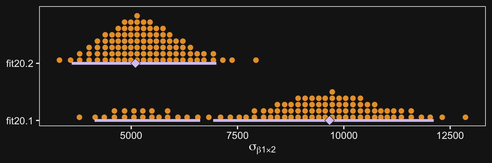
As Kruschke pointed out in the text, notice how each Field has only one level of Till, but three levels of Fert.
20.5.2.2 The descriptive model.
In the classical ANOVA-style model for a split-plot design, the overall variance is conceptually decomposed into five components: the main effect of the between-subjects factor, the main effect of the within-subjects factor, the interaction of the two factors, the effect of subject within levels of the between-subject factor, and the interaction of subject with the within-subject factor. Unfortunately, because there is only a single datum per cell, the five components exactly match the data, which is to say that there are as many parameters as there are data points. (If every subject contributed multiple data points to every cell then the five-component model could be used.) Because there is no residual noise within cells, the classical approach is to treat the final component as noise, that is, treat the interaction of subject with the within-subject factor as noise. That component is not included in the model (at least, not distinct from noise). We will do the same for the descriptive model in our Bayesian analysis. (p. 612)
20.5.2.3 Implementation in JAGS brms.
Define the stanvars.
mean_y <- mean(my_data$Yield)
sd_y <- sd(my_data$Yield)
omega <- sd_y / 2
sigma <- 2 * sd_y
s_r <- gamma_a_b_from_omega_sigma(mode = omega, sd = sigma)
stanvars <-
stanvar(mean_y, name = "mean_y") +
stanvar(sd_y, name = "sd_y") +
stanvar(s_r$shape, name = "alpha") +
stanvar(s_r$rate, name = "beta")Here’s how to fit the model with brm().
fit20.3 <-
brm(data = my_data,
family = gaussian,
Yield ~ 1 + (1 | Till) + (1 | Fert) + (1 | Field) + (1 | Till:Fert),
prior = c(prior(normal(mean_y, sd_y * 5), class = Intercept),
prior(gamma(alpha, beta), class = sd),
prior(cauchy(0, sd_y), class = sigma)),
iter = 4000, warmup = 2000, chains = 4, cores = 4,
seed = 20,
control = list(adapt_delta = 0.99,
max_treedepth = 12),
stanvars = stanvars,
file = "fits/fit20.03")20.5.2.4 Results.
Check the summary.
## Family: gaussian
## Links: mu = identity; sigma = identity
## Formula: Yield ~ 1 + (1 | Till) + (1 | Fert) + (1 | Field) + (1 | Till:Fert)
## Data: my_data (Number of observations: 99)
## Samples: 4 chains, each with iter = 4000; warmup = 2000; thin = 1;
## total post-warmup samples = 8000
##
## Group-Level Effects:
## ~Fert (Number of levels: 3)
## Estimate Est.Error l-95% CI u-95% CI Rhat Bulk_ESS Tail_ESS
## sd(Intercept) 15.36 13.52 1.35 51.01 1.00 2495 2714
##
## ~Field (Number of levels: 33)
## Estimate Est.Error l-95% CI u-95% CI Rhat Bulk_ESS Tail_ESS
## sd(Intercept) 11.74 1.72 8.87 15.60 1.00 1639 3004
##
## ~Till (Number of levels: 3)
## Estimate Est.Error l-95% CI u-95% CI Rhat Bulk_ESS Tail_ESS
## sd(Intercept) 15.48 13.84 1.25 53.53 1.00 2087 2781
##
## ~Till:Fert (Number of levels: 9)
## Estimate Est.Error l-95% CI u-95% CI Rhat Bulk_ESS Tail_ESS
## sd(Intercept) 8.79 4.13 3.69 19.67 1.00 1901 3365
##
## Population-Level Effects:
## Estimate Est.Error l-95% CI u-95% CI Rhat Bulk_ESS Tail_ESS
## Intercept 140.44 15.87 107.70 174.18 1.00 2632 3057
##
## Family Specific Parameters:
## Estimate Est.Error l-95% CI u-95% CI Rhat Bulk_ESS Tail_ESS
## sigma 5.69 0.53 4.75 6.83 1.00 3583 5148
##
## Samples were drawn using sampling(NUTS). For each parameter, Bulk_ESS
## and Tail_ESS are effective sample size measures, and Rhat is the potential
## scale reduction factor on split chains (at convergence, Rhat = 1).We might compare the \(\sigma\) posteriors with a plot.
posterior_samples(fit20.3) %>%
pivot_longer(c(sigma, starts_with("sd"))) %>%
ggplot(aes(x = value, y = name)) +
geom_halfeyeh(point_interval = mode_hdi, .width = c(.5, .95),
scale = .85, normalize = "xy") +
labs(x = NULL,
y = NULL) +
coord_cartesian(xlim = 0:50,
ylim = c(1.25, 5.5)) +
theme(axis.text.y = element_text(hjust = 0),
axis.ticks.y = element_blank(),
panel.grid = element_blank())
Now we have the results of fit20.3, we are ready to make our version if Figure 20.10. Note that how within add_fitted_draws(), we used the re_formula argument to average over the random effects of Field (i.e., we left (1 | Field) out of the formula). That’s our equivalent to when Kruschke wrote “The predictive normal distributions are plotted with means at \(\beta_0 + \beta_B + \beta_W + \beta_{B \times W}\) (collapsed across \(\beta_S\)) and with standard deviation \(\sigma\)” (pp. 614-615).
# wrangle
my_data %>%
distinct(Till, Fert) %>%
add_fitted_draws(fit20.3, n = 20,
re_formula = Yield ~ 1 + (1 | Till) + (1 | Fert) + (1 | Till:Fert),
dpar = c("mu", "sigma")) %>%
mutate(ll = qnorm(.025, mean = mu, sd = sigma),
ul = qnorm(.975, mean = mu, sd = sigma)) %>%
mutate(Yield = map2(ll, ul, seq, length.out = 100)) %>%
unnest(Yield) %>%
mutate(density = dnorm(Yield, mu, sigma)) %>%
group_by(.draw) %>%
mutate(density = density / max(density)) %>%
# plot
ggplot(aes(x = Yield, y = Fert)) +
geom_path(data = my_data,
aes(group = Field %>% as.factor()),
size = 1/4) +
geom_ridgeline(aes(height = -density, group = interaction(Fert, .draw),
color = Fert),
fill = NA, size = 1/3, scale = 3/4,
min_height = NA) +
geom_jitter(data = my_data,
height = .025, alpha = 1/4) +
scale_color_viridis_d(option = "A", begin = .2, end = .8) +
scale_x_continuous(breaks = seq(from = 100, to = 180, by = 20)) +
coord_flip(xlim = 90:190,
ylim = c(0.5, 2.75)) +
ggtitle("Data with Posterior Predictive Distribution") +
theme(axis.ticks.x = element_blank(),
legend.position = "none",
panel.grid = element_blank()) +
facet_wrap(~Till)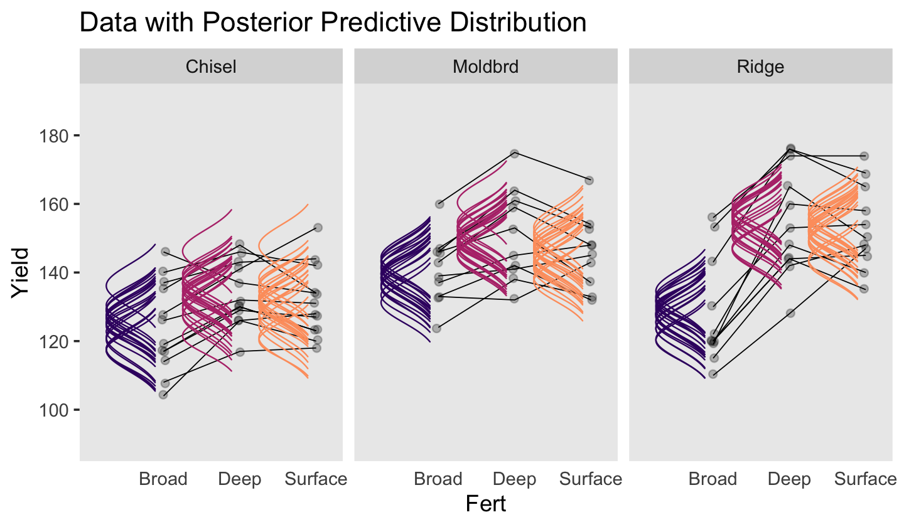
Now let’s make our Figure 20.11 contrasts.
col_names <-
my_data %>%
distinct(Till, Fert) %>%
unite(key, Till, Fert) %>%
pull()
nd <-
my_data %>%
distinct(Till, Fert)
fitted(fit20.3,
newdata = nd,
summary = F,
re_formula = Yield ~ 1 + (1 | Till) + (1 | Fert) + (1 | Till:Fert)) %>%
as_tibble() %>%
set_names(col_names) %>%
transmute(
`Moldbrd vs Ridge` = ((Moldbrd_Broad + Moldbrd_Deep + Moldbrd_Surface) / 3) - ((Ridge_Broad + Ridge_Deep + Ridge_Surface) / 3),
`Moldbrd.Ridge vs Chisel` = ((Moldbrd_Broad + Moldbrd_Deep + Moldbrd_Surface + Ridge_Broad + Ridge_Deep + Ridge_Surface) / 6) - ((Chisel_Broad + Chisel_Deep + Chisel_Surface) / 3),
`Deep.Surface vs Broad` = ((Chisel_Deep + Moldbrd_Deep + Ridge_Deep + Chisel_Surface + Moldbrd_Surface + Ridge_Surface) / 6) - ((Chisel_Broad + Moldbrd_Broad + Ridge_Broad) / 3),
`Chisel.Moldbrd.v.Ridge (x) Broad.v.Deep.Surface` = (((Chisel_Broad + Chisel_Deep + Chisel_Surface + Moldbrd_Broad + Moldbrd_Deep + Moldbrd_Surface) / 6) - ((Ridge_Broad + Ridge_Deep + Ridge_Surface) / 3)) - (((Chisel_Broad + Moldbrd_Broad + Ridge_Broad) / 3) - ((Chisel_Deep + Moldbrd_Deep + Ridge_Deep + Chisel_Surface + Moldbrd_Surface + Ridge_Surface) / 6))
) %>%
pivot_longer(everything()) %>%
mutate(name = factor(name, levels = c("Moldbrd vs Ridge", "Moldbrd.Ridge vs Chisel", "Deep.Surface vs Broad", "Chisel.Moldbrd.v.Ridge (x) Broad.v.Deep.Surface"))) %>%
ggplot(aes(x = value, y = 0)) +
geom_rect(xmin = -5, xmax = 5,
ymin = -Inf, ymax = Inf,
color = "transparent", fill = "white") +
stat_histintervalh(point_interval = mode_hdi, .width = c(.95, .5),
fill = "grey67", slab_color = "grey92",
breaks = 40, slab_size = .25, outline_bars = T,
normalize = "panels") +
scale_y_continuous(NULL, breaks = NULL) +
xlab("Difference") +
theme(panel.grid = element_blank(),
strip.text = element_text(size = 6)) +
facet_wrap(~name, scales = "free", ncol = 4)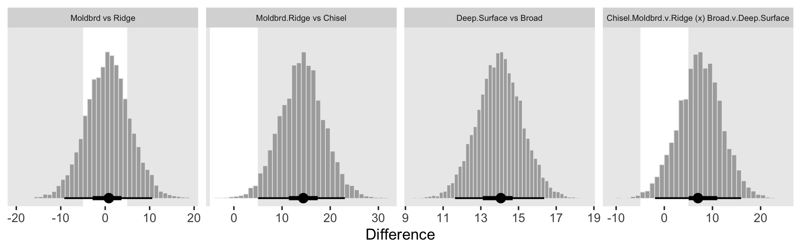
As far as I can tell, it appears that our contrasts indicate our variance parameter for Till ended up larger than Kruschke’s.
Kruschke then posed a model “with field/subject coding suppressed, hence no lines connecting data from the same field/subject” (p. 616). Here’s how to fit that model.
fit20.4 <-
brm(data = my_data,
family = gaussian,
Yield ~ 1 + (1 | Till) + (1 | Fert) + (1 | Till:Fert),
prior = c(prior(normal(mean_y, sd_y * 5), class = Intercept),
prior(gamma(alpha, beta), class = sd),
prior(cauchy(0, sd_y), class = sigma)),
iter = 4000, warmup = 2000, chains = 4, cores = 4,
seed = 20,
control = list(adapt_delta = 0.999,
max_treedepth = 12),
stanvars = stanvars,
file = "fits/fit20.04")Behold the summary.
## Family: gaussian
## Links: mu = identity; sigma = identity
## Formula: Yield ~ 1 + (1 | Till) + (1 | Fert) + (1 | Till:Fert)
## Data: my_data (Number of observations: 99)
## Samples: 4 chains, each with iter = 4000; warmup = 2000; thin = 1;
## total post-warmup samples = 8000
##
## Group-Level Effects:
## ~Fert (Number of levels: 3)
## Estimate Est.Error l-95% CI u-95% CI Rhat Bulk_ESS Tail_ESS
## sd(Intercept) 14.89 12.84 1.35 49.45 1.00 2960 3323
##
## ~Till (Number of levels: 3)
## Estimate Est.Error l-95% CI u-95% CI Rhat Bulk_ESS Tail_ESS
## sd(Intercept) 16.27 13.75 1.77 52.94 1.00 2855 2968
##
## ~Till:Fert (Number of levels: 9)
## Estimate Est.Error l-95% CI u-95% CI Rhat Bulk_ESS Tail_ESS
## sd(Intercept) 7.66 4.56 1.28 18.44 1.00 2064 2814
##
## Population-Level Effects:
## Estimate Est.Error l-95% CI u-95% CI Rhat Bulk_ESS Tail_ESS
## Intercept 140.64 16.03 108.18 174.17 1.00 3718 3685
##
## Family Specific Parameters:
## Estimate Est.Error l-95% CI u-95% CI Rhat Bulk_ESS Tail_ESS
## sigma 12.71 0.96 11.01 14.76 1.00 8073 5309
##
## Samples were drawn using sampling(NUTS). For each parameter, Bulk_ESS
## and Tail_ESS are effective sample size measures, and Rhat is the potential
## scale reduction factor on split chains (at convergence, Rhat = 1).Look at how much larger the posterior is for \(\sigma_y\) in this model compared to fit20.3.
## Estimate Est.Error Q2.5 Q97.5
## 5.6934670 0.5314513 4.7521209 6.8286296## Estimate Est.Error Q2.5 Q97.5
## 12.7086864 0.9606523 11.0091522 14.7612638Here’s the top portion of Figure 20.12.
# wrangle
my_data %>%
distinct(Till, Fert) %>%
add_fitted_draws(fit20.4, n = 20,
re_formula = Yield ~ 1 + (1 | Till) + (1 | Fert) + (1 | Till:Fert),
dpar = c("mu", "sigma")) %>%
mutate(ll = qnorm(.025, mean = mu, sd = sigma),
ul = qnorm(.975, mean = mu, sd = sigma)) %>%
mutate(Yield = map2(ll, ul, seq, length.out = 200)) %>%
unnest(Yield) %>%
mutate(density = dnorm(Yield, mu, sigma)) %>%
group_by(.draw) %>%
mutate(density = density / max(density)) %>%
# plot
ggplot(aes(x = Yield, y = Fert)) +
geom_ridgeline(aes(height = -density, group = interaction(Fert, .draw),
color = Fert),
fill = NA, size = 1/3, scale = 3/4,
min_height = NA) +
geom_jitter(data = my_data,
height = .025, alpha = 1/4) +
scale_color_viridis_d(option = "A", begin = .2, end = .8) +
scale_x_continuous(breaks = seq(from = 100, to = 180, by = 20)) +
coord_flip(xlim = 90:190,
ylim = c(0.5, 2.75)) +
ggtitle("Data with Posterior Predictive Distribution") +
theme(axis.ticks.x = element_blank(),
legend.position = "none",
panel.grid = element_blank()) +
facet_wrap(~Till)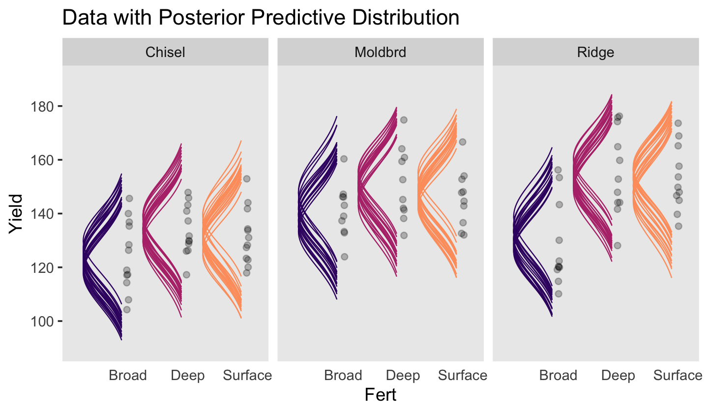
Now the make the plots for the contrast distributions.
fitted(fit20.4,
newdata = nd,
summary = F,
re_formula = Yield ~ 1 + (1 | Till) + (1 | Fert) + (1 | Till:Fert)) %>%
as_tibble() %>%
set_names(col_names) %>%
transmute(
`Moldbrd vs Ridge` = ((Moldbrd_Broad + Moldbrd_Deep + Moldbrd_Surface) / 3) - ((Ridge_Broad + Ridge_Deep + Ridge_Surface) / 3),
`Moldbrd.Ridge vs Chisel` = ((Moldbrd_Broad + Moldbrd_Deep + Moldbrd_Surface + Ridge_Broad + Ridge_Deep + Ridge_Surface) / 6) - ((Chisel_Broad + Chisel_Deep + Chisel_Surface) / 3),
`Deep.Surface vs Broad` = ((Chisel_Deep + Moldbrd_Deep + Ridge_Deep + Chisel_Surface + Moldbrd_Surface + Ridge_Surface) / 6) - ((Chisel_Broad + Moldbrd_Broad + Ridge_Broad) / 3),
`Chisel.Moldbrd.v.Ridge (x) Broad.v.Deep.Surface` = (((Chisel_Broad + Chisel_Deep + Chisel_Surface + Moldbrd_Broad + Moldbrd_Deep + Moldbrd_Surface) / 6) - ((Ridge_Broad + Ridge_Deep + Ridge_Surface) / 3)) - (((Chisel_Broad + Moldbrd_Broad + Ridge_Broad) / 3) - ((Chisel_Deep + Moldbrd_Deep + Ridge_Deep + Chisel_Surface + Moldbrd_Surface + Ridge_Surface) / 6))
) %>%
gather() %>%
mutate(key = factor(key, levels = c("Moldbrd vs Ridge", "Moldbrd.Ridge vs Chisel", "Deep.Surface vs Broad", "Chisel.Moldbrd.v.Ridge (x) Broad.v.Deep.Surface"))) %>%
ggplot(aes(x = value, y = 0)) +
geom_rect(xmin = -5, xmax = 5,
ymin = -Inf, ymax = Inf,
color = "transparent", fill = "white") +
stat_histintervalh(point_interval = mode_hdi, .width = c(.95, .5),
fill = "grey67", slab_color = "grey92",
breaks = 40, slab_size = .25, outline_bars = T,
normalize = "panels") +
scale_y_continuous(NULL, breaks = NULL) +
xlab("Difference") +
theme(panel.grid = element_blank(),
strip.text = element_text(size = 6)) +
facet_wrap(~key, scales = "free", ncol = 4)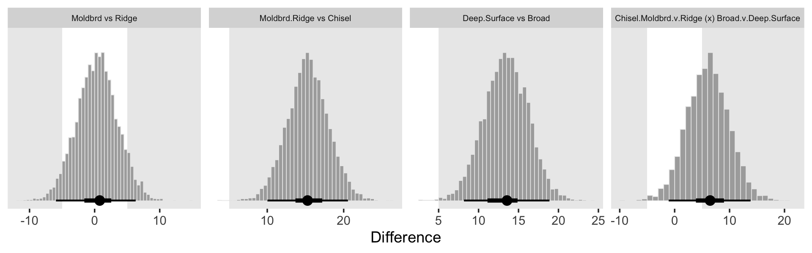
Though not identical, these were closer to those Kruschke displayed in the text.
20.5.2.5 Model comparison approach.
Like we covered in Chapter 10, I’m not aware that Stan/brms will allow for \(\delta\) factor-inclusion parameters the way JAGS allows. However, if you’d like to compare models with different parameters, you can always use information criteria.
Executing that yielded the following warning message:
Found 4 observations with a pareto_k > 0.7 in model ‘fit20.3’. It is recommended to set ‘reloo = TRUE’ in order to calculate the ELPD without the assumption that these observations are negligible. This will refit the model 4 times to compute the ELPDs for the problematic observations directly.
Let’s follow the diagnostic warnings to make sure the model comparison is robust to the outlying values.
We’re finally ready for the LOO comparison.
## elpd_diff se_diff elpd_loo se_elpd_loo p_loo se_p_loo looic se_looic
## fit20.3 0.0 0.0 -335.3 8.2 34.8 4.5 670.5 16.4
## fit20.4 -61.1 7.9 -396.4 5.7 8.7 1.0 792.7 11.4All good. Based on the LOO values, we should prefer the fuller model. This, of course, should be no surprise. The posterior for \(\sigma_\text{Field}\) was a far cry from zero.
## Estimate Est.Error Q2.5 Q97.5
## 11.741891 1.723704 8.868938 15.604229Kruschke ended this chapter by mentioning Bayes’ factors:
Bayes’ factor approaches to hypothesis tests in ANOVA were presented by Rouder, Morey, Speckman, and Province (2012) and Wetzels, Grasman, and Wagenmakers (2012). Morey and Rouder’s BayesFactor package for R is available at the Web site http://bayesfactorpcl.r-forge.r-project.org/. (p. 618)
If you wanna go that route, you’re on your own.
Session info
## R version 3.6.2 (2019-12-12)
## Platform: x86_64-apple-darwin15.6.0 (64-bit)
## Running under: macOS High Sierra 10.13.6
##
## Matrix products: default
## BLAS: /Library/Frameworks/R.framework/Versions/3.6/Resources/lib/libRblas.0.dylib
## LAPACK: /Library/Frameworks/R.framework/Versions/3.6/Resources/lib/libRlapack.dylib
##
## locale:
## [1] en_US.UTF-8/en_US.UTF-8/en_US.UTF-8/C/en_US.UTF-8/en_US.UTF-8
##
## attached base packages:
## [1] stats graphics grDevices utils datasets methods base
##
## other attached packages:
## [1] ggridges_0.5.2 tidybayes_2.0.1.9000 brms_2.11.5 Rcpp_1.0.3
## [5] patchwork_1.0.0 forcats_0.4.0 stringr_1.4.0 dplyr_0.8.4
## [9] purrr_0.3.3 readr_1.3.1 tidyr_1.0.2 tibble_2.1.3
## [13] ggplot2_3.2.1 tidyverse_1.3.0
##
## loaded via a namespace (and not attached):
## [1] colorspace_1.4-1 ellipsis_0.3.0 rsconnect_0.8.16
## [4] markdown_1.1 base64enc_0.1-3 fs_1.3.1
## [7] rstudioapi_0.10 farver_2.0.3 rstan_2.19.2
## [10] svUnit_0.7-12 DT_0.11 fansi_0.4.1
## [13] mvtnorm_1.0-12 lubridate_1.7.4 xml2_1.2.2
## [16] bridgesampling_0.8-1 knitr_1.26 shinythemes_1.1.2
## [19] bayesplot_1.7.1 jsonlite_1.6.1 broom_0.5.3
## [22] dbplyr_1.4.2 shiny_1.4.0 compiler_3.6.2
## [25] httr_1.4.1 backports_1.1.5 assertthat_0.2.1
## [28] Matrix_1.2-18 fastmap_1.0.1 lazyeval_0.2.2
## [31] cli_2.0.1 later_1.0.0 htmltools_0.4.0
## [34] prettyunits_1.1.1 tools_3.6.2 igraph_1.2.4.2
## [37] coda_0.19-3 gtable_0.3.0 glue_1.3.1
## [40] reshape2_1.4.3 cellranger_1.1.0 vctrs_0.2.2
## [43] nlme_3.1-142 crosstalk_1.0.0 xfun_0.12
## [46] ps_1.3.0 rvest_0.3.5 mime_0.8
## [49] miniUI_0.1.1.1 lifecycle_0.1.0 gtools_3.8.1
## [52] zoo_1.8-7 scales_1.1.0 colourpicker_1.0
## [55] hms_0.5.3 promises_1.1.0 Brobdingnag_1.2-6
## [58] parallel_3.6.2 inline_0.3.15 shinystan_2.5.0
## [61] yaml_2.2.1 gridExtra_2.3 loo_2.2.0
## [64] StanHeaders_2.19.0 stringi_1.4.5 dygraphs_1.1.1.6
## [67] pkgbuild_1.0.6 rlang_0.4.4 pkgconfig_2.0.3
## [70] matrixStats_0.55.0 HDInterval_0.2.0 evaluate_0.14
## [73] lattice_0.20-38 labeling_0.3 rstantools_2.0.0
## [76] htmlwidgets_1.5.1 tidyselect_1.0.0 processx_3.4.1
## [79] plyr_1.8.5 magrittr_1.5 R6_2.4.1
## [82] generics_0.0.2 DBI_1.1.0 pillar_1.4.3
## [85] haven_2.2.0 withr_2.1.2 xts_0.12-0
## [88] abind_1.4-5 modelr_0.1.5 crayon_1.3.4
## [91] arrayhelpers_1.0-20160527 utf8_1.1.4 rmarkdown_2.0
## [94] grid_3.6.2 readxl_1.3.1 callr_3.4.1
## [97] threejs_0.3.3 reprex_0.3.0 digest_0.6.23
## [100] xtable_1.8-4 httpuv_1.5.2 stats4_3.6.2
## [103] munsell_0.5.0 viridisLite_0.3.0 shinyjs_1.1Footnote
It’s not quite clear where these data come from. At the top of page 591, Kruschke wrote “in this section, we will be looking at some real-world salaries.” Further down on the same page, Kruschke added: “The data are annual salaries of 1,080 tenure-track professors at a large-enrollment, small-city, midwestern-American, research-oriented, state university. (Salaries at big- city and private universities tend to be higher, while salaries at liberal-arts colleges and teaching-oriented state universities tend to be lower.) The data span 60 academic departments that had at least seven members. The data also include the professor’s seniority.” He did not provide a reference.↩